Nginx Proxy Manager (NPM) Configuration
In this step we will configure external access to services (Lightning Terminal, LNbits, Cashu, and Orchard) using Nginx Proxy Manager, which acts as a reverse proxy and SSL certificate manager.
Initial Access
Initial access to the Nginx Proxy Manager (NPM) container is done via HTTP using port 81. In our example, we will access it via the URL http://npm.cashu4community.xyz:81. In the following step, we will modify this configuration to avoid security risks.
The container is preconfigured, so user creation is not required on first startup.
Image 1: Nginx Proxy Manager login page.
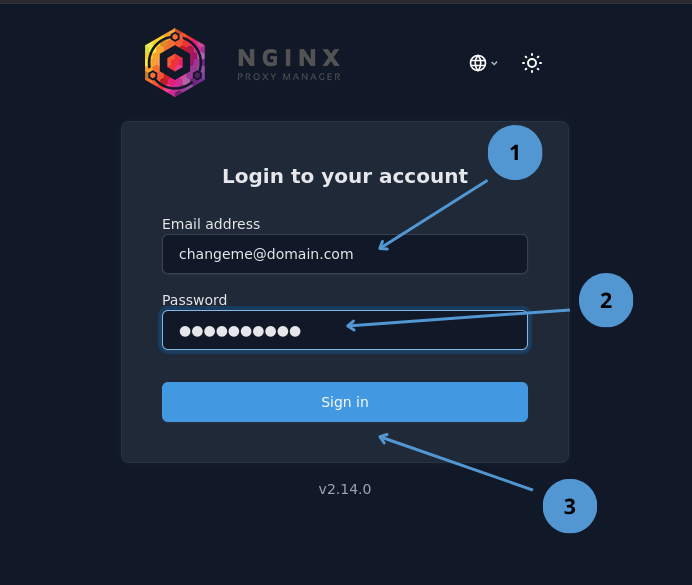
- User
changeme@domain.com - Password
ch4ng3m3*- - Press
Enteror clickSign in
After logging in, we proceed to the NPM service dashboard.
Image 2: NPM Dashboard.
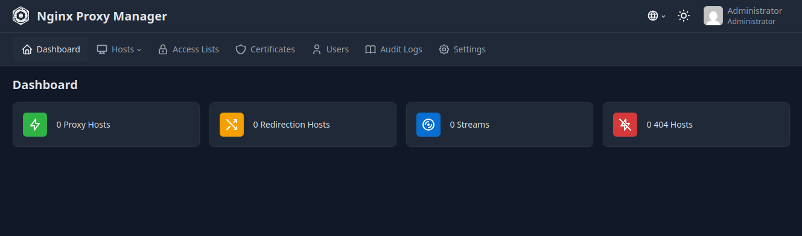
- Enter the Proxy Host panel.
3.1 Creating a Proxy Host for NPM
As you may have noticed, access to NPM is done via HTTP (insecure protocol) and through port 81, which leaves our service vulnerable to attacks. To solve this, we will create a Proxy Host for NPM itself so we can operate over HTTPS.
Image 3: Adding a Proxy Host.
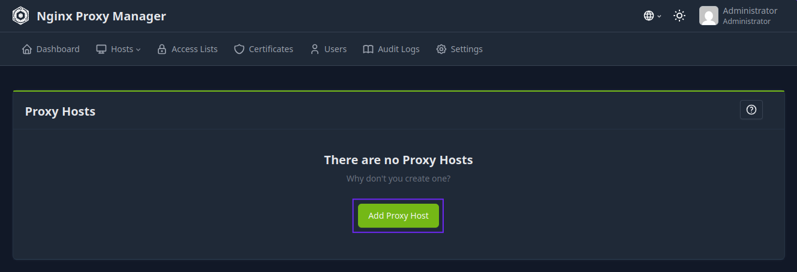
- Add a Proxy Host.
Image 4: Proxy Host Options.
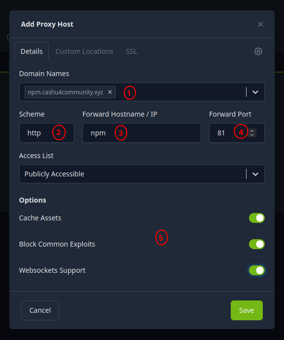
Domain Names: Enter the domain name that the application will use facing the internet. Since we are configuring access to NPM, we will use the domainnpm.cashu4community.xyz.Scheme: The scheme is the protocol used by NPM to communicate with the application running in the container; it can be http or https. For NPM we leave it as http.Forward Hostname / IP: This is nothing more than the hostname; since it is a Docker container, it is best to use the service name. As we are configuring NPM, we will use npm. You can see the complete list of services at the end of the First Steps section.Forward Port: This is the port the application runs on internally in the Docker container. NPM uses port 81. You will find the port list at the end of this tutorial.Options: Enable all options to improve application security and functionality.
Image 5: Proxy Host SSL Options.
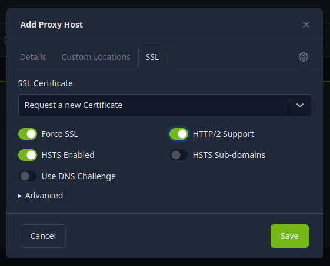
- Go to the SSL tab.
- Select
Request a new Certificatefrom the dropdown menu. - Enable
Force SSL,HTTP/2 Support, andHSTS Enabledoptions. - Save changes.
After saving changes, we can see the NPM record in the Proxy Host panel.
Image 6: NPM service record in the Proxy Host panel.
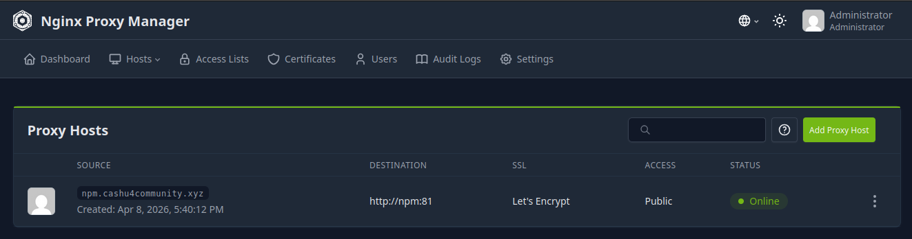
Image 7: Properly configured Proxy Host.
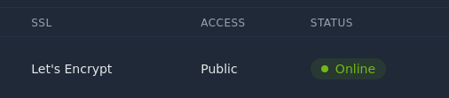
With NPM now configured to access securely via HTTPS, we log out and log back in to continue with other configurations.
Image 8: Logout User Menu.
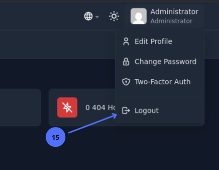
- Log out.
3.2 List of Services to Configure in NPM
The following table shows the services to configure in NPM, as well as all the parameters needed to configure them. We will use the domain cashu4community.xyz as a reference; adapt it to your personal domains.
| Domain Name | Scheme | Docker Service | Port |
|---|---|---|---|
| npm.cashu4community.xyz | http | npm | 81 |
| lit.cashu4community.xyz | https | lit | 8443 |
| lnbits.cashu4community.xyz | http | lnbits | 5000 |
| mint.cashu4community.xyz | http | cashu | 3336 |
| orchard.cashu4community.xyz | http | orchard | 3326 |
Once we register all Proxy Hosts, it would look something like this:
Image 9: List of Infrastructure services in NPM.
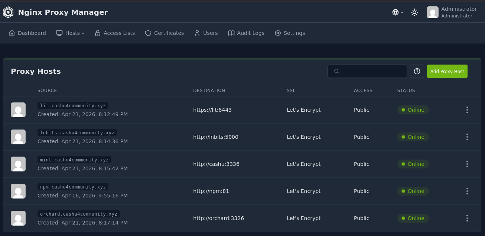
3.3 Updating Access Account Data
As mentioned at the beginning of this tutorial, the NPM service comes preconfigured with a generic user account. To avoid unwanted access to our infrastructure, it is mandatory to change this account. To do this, access the user menu.
Image 9: User Menu Edit Profile.
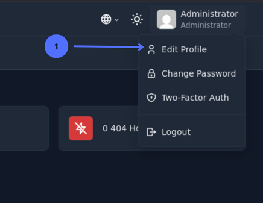
- Click
Edit Profileto change the email address we use to log in.
Image 10: Changing username and email.
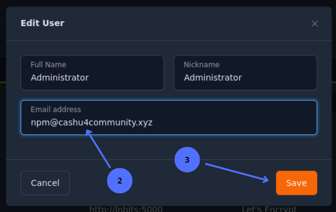
- Update the
Email addressfield with our email. - Save changes.
Image 11: User menu change password.
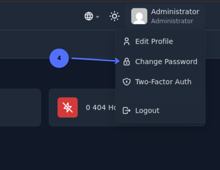
- Click
Change Passwordto change the current password.
Image 12: Changing the current user's password.
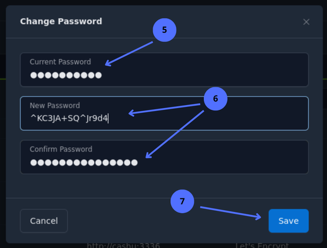
- Enter the current password.
- Enter the new password and confirm it.
- Save changes.
Image 13: User menu two-factor authentication.
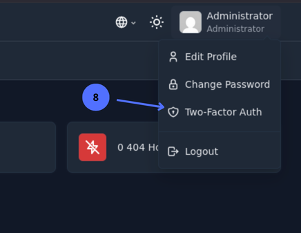
- Click
Two-Factor Auth(recommended to enable for extra security).
Image 14: Enabling 2FA in the NPM system.
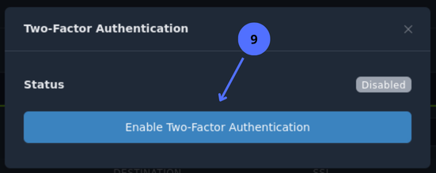
- Click the button to enable two-factor authentication.
Image 15: Enabling 2FA via QR with verification code.
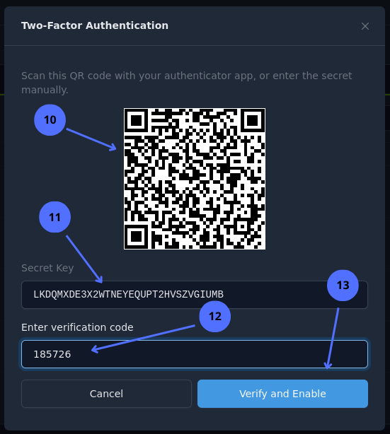
- Scan the QR with the 2FA Authenticator app. You can use others like Authy for this step.
- If scanning the QR is not possible, copy the code directly into the 2FA app.
- Paste the 6-digit code generated by the 2FA app.
- Verify.
If verification fails, it may be because the 6-digit code expired. Try again. The next step will show us the recovery codes necessary in case we lose the 2FA code or the app gets uninstalled.
Image 16: 2FA recovery codes.
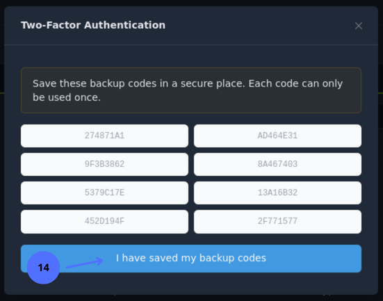
- Copy the recovery codes and confirm.
Image 17: 2FA options.
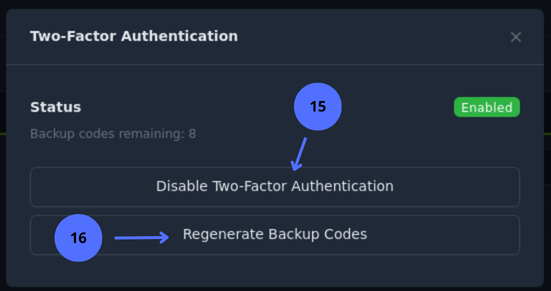
- Click here if you want to disable 2FA.
- Click here if you want new recovery codes.
3.4 Removing Access to NPM via Port 81
Now that we have configured secure access to NPM and updated the admin account credentials, we will disable access to NPM via port 81. To do this, edit the docker-compose.yml file located in cashu4cs-deploy.
nano docker-compose.ymlLook for the NPM service that begins with the line npm: and remove the line - '81:81' from ports:
npm:
image: jc21/nginx-proxy-manager:latest
container_name: nginx_proxy_manager
restart: unless-stopped
ports:
- '80:80'
- '443:443'
- '81:81'
environment:
- DB_SQLITE_FILE:"/data/database.sqlite"
- DISABLE_IPV6:'true'
volumes:
- ./app-data/npm/data:/data
- ./app-data/npm/letsencrypt:/etc/letsencryptNPM service without port 81.
npm:
image: jc21/nginx-proxy-manager:latest
container_name: nginx_proxy_manager
restart: unless-stopped
ports:
- '80:80'
- '443:443'
environment:
- DB_SQLITE_FILE:"/data/database.sqlite"
- DISABLE_IPV6:'true'
volumes:
- ./app-data/npm/data:/data
- ./app-data/npm/letsencrypt:/etc/letsencryptSave and exit the file ctrl+s and ctrl+x.
Finally, recreate the NPM service container for the changes to take effect:
docker-compose up --force-recreate npm -d